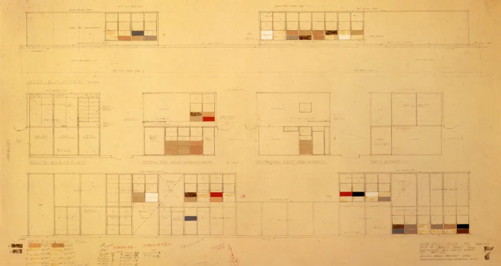

Charles and Ray were summoned by a new problem: how to build a house that would not destroy the meadow, but would “maximize volume from minimal materials.” Using the same off-the-shelf parts, but notably ordering one extra steel beam, Charles and Ray reconfigured the house’s first design into a two-story pair of structures: a residence and separate studio. They integrated the new design into the landscape’s north-south hillside, rather than imposing on it. Construction began in February 1949, and after 16 hours, the foundation and steel frame were complete. The remainder of the modular home was finished by December.